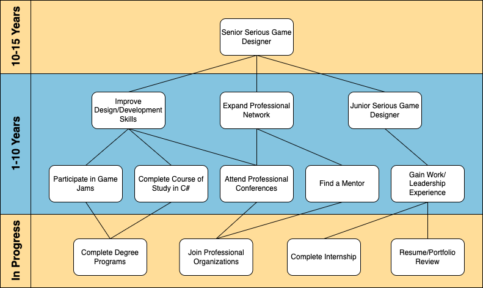

Educational & Career Reflection
My educational and career experiences have included many valuable projects and coursework that have fueled my pursuit of a career in learning technologies. After receiving my Bachelor of Science in Family and Consumer Sciences from the University of Central Arkansas, I moved to Pittsburg, Kansas to pursue a Masters in Psychology from Pittsburg State University. I was privileged to have the opportunity to work as a Graduate Assistant during my time there. I worked in the Center for Research, Evaluation, and Awareness for Dyslexia assessing clients for reading difficulties, compiling psychological reports, and implementing reading interventions and tutoring. My course work at Pitt State focused on the psychology of learning from a biological and behavioral perspective. My classes, combined with my work at the Center for READing, changed my view of education drastically. I was exposed to how the educational experience differs greatly for students from different backgrounds. I became extremely interested in neurodiversity and the role of biology in informing differing learning experiences.
After finishing my M.S. in Psychology, I decided to take my newfound interest in the biological basis of learning and run with it. I’ve always loved science, so this was a natural step for me. I was lucky to receive a Graduate Teaching Assistantship at Missouri State University, and enrolled in classes to pursue a Masters of Natural and Applied Science with an emphasis in Biology shortly after. My course work at Missouri State was challenging and reminded me just how passionate I could be about science, technology, engineering, and mathematics. Perhaps my most impactful experience while pursuing this degree was my role as a teaching assistant. For the first time, I was responsible for delivering Biology content in the role of “teacher.” I had the opportunity to be the teacher of record for introductory laboratory classes for college students. This experience shifted my interest from the merely academic side of learning to the practical. I now had teaching experience and wanted more.
When I graduated from Missouri State in 2016, I entered a full-time science teaching position at a public charter school in Northwest Arkansas. I had no idea of the challenges that lay ahead, but I was excited to be a formal educator. I taught and developed curriculum for a wide variety of 7th-12th grade science classes. These included Biology, AP Environmental Science, Physical Science, 7th Grade Science, 8th Grade Science, Aquaculture, Animal Science, Introductory Coding, Tools for Learning, and even Astronomy! I learned more STEM content in my years of teaching than I had in any higher educational setting! This job was also an incredible opportunity for me to grow as a person, experience the joy of working with young adults, and get a peek at K-12 education from the inside. I loved teaching in the classroom, but I knew that I wanted to experience other aspects of the world of education.
In 2019, I took a position in Tulsa, Oklahoma as STEM program coordinator working for a grant with Tulsa Community College. I spent my time coordinating and implementing STEM programs targeted at under-resourced high school student populations. A colleague and I worked together to develop a program plan for an initiative with Tulsa Public Schools called City Lab. We also had the opportunity to virtually implement our program for several cohorts of students throughout the spring and summer of 2020! The role of informal educator and project planner was completely new for me, but I am so grateful for the lessons I learned from my co-workers on project management, community engagement, and the importance of equitable education experiences.
In December of 2020, I had an exciting life change- I got married. Due to my husband’s job, this meant leaving my role in Tulsa and relocating to the San Fransico Bay Area. The move was an opportunity for me to reassess my career so far and look to the future. The common threads tying together all the best memories of my educational and career experience are two things a) a passion for STEM education and b) a desire to create educational content that reaches diverse students. Because of these two things I decided to further my career by enrolling in an Educational Specialist program in Learning Technologies and Design and a Graduate Certificate program in Serious Games and Simulation design both through the University of Missouri.
My experiences within the LTD program at Mizzou have helped me to gain the technical skills and design knowledge I needed to be able to create exciting, engaging, and worthwhile STEM learning experiences for students. In addition, I gained the front-end analysis, research, and assessment skills required to support those design and development skills within a professional environment. My understanding of learning technologies has broadened to include new tools and research-based methods. The LTD program allowed me to gain valuable experience walking through designing learning products from start to finish. This process has provided me with confidence that I can accomplish this successfully as a working professional. I’ve got a long way to go, but I hope to use the competencies gained in the LTD program to become an e-learning developer, serious game designer, or instructional designer in the near future! Below you'll find my plan for getting there!
Professional Development Plan
